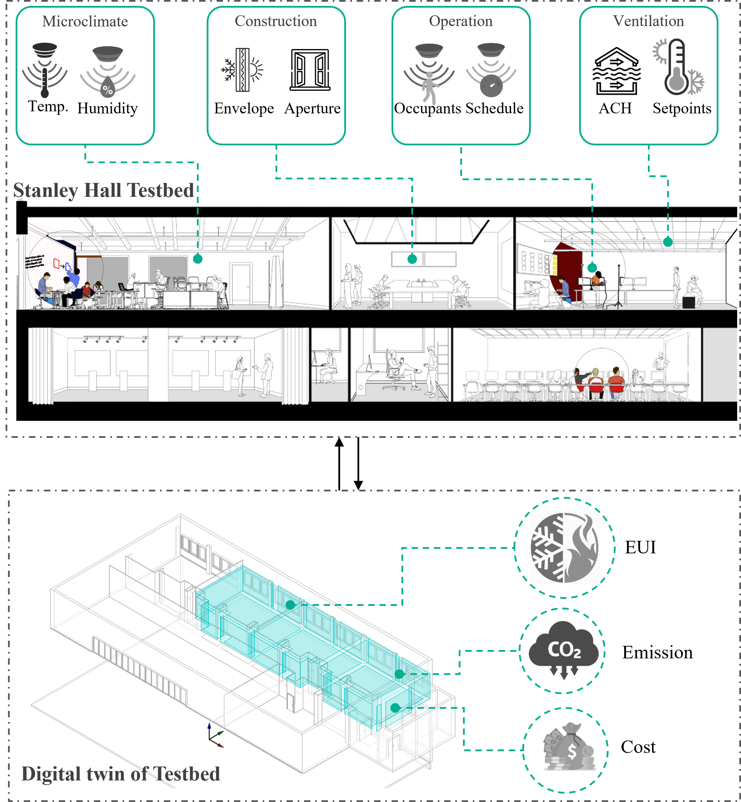

This research develops a computational framework that seamlessly integrates realtime data collection, energy simulations, and performance predictions.
The proposed approach is implemented through three key phases:
(i) incorporating IoT sensor data into a parametric BIM model,
(ii) generating training datasets using building performance simulations, and
(iii) developing machine learning models for real-time predictions.
The research demonstrates how this framework bridges gaps in conventional workflows, enabling dynamic adjustment of building operation and emission forecasting.
This paper outlines the findings, challenges, and limitations of the framework, along with recommendations for advancing digital twin research.



The research proposed a digital twin framework to facilitate communication between real-time building use/operation
and energy simulations to reduce greenhouse gas emissions. The paper presents the testbed development using a university
campus building and the digital twin creation connected with parametric BIM, CO2 emission simulation, and ML-based prediction.


This study addresses the challenge through occupancy-based HVAC control strategies, bolstered by machine learning predictions.
The study delves into using occupancy insights for HVAC control, utilizing simulations to uncover potential energy savings.
It extends its reach into time series forecasting, predicting energy patterns for short terms.


A massive number of stateless Rohingya refugees entered Bangladesh to escape severe crimes against humanity conducted by the Myanmar Army.
Shelters made of bamboo frames, tarpaulin, and plastic sheeting creating unhealthy built environment. The goal of this research is to
identify clusters of refugee shelters with the highest and lowest energy consumption rates, and the factors contributing to these differences.

Sensitivity analysis (SA) is important to screen out important factors in early-stage design.
Design of experiment (DoE) such as fewer runs Plackett-Burman (PB) design can screen key factors
comparable to thousand runs Latin Hypercube Simulation (LHS).


This Electronic components generate heat during their operation, and
the heat should be driven out to surroundings on a continuous basis to achieve proper functioning. Solidliquid phase change materials (PCM) have been widely examined for active thermal management of
electronic devices. The advantages of PCM for thermal management are high specific heat, high latent
heat of fusion, and small volume changes on phase change. PCM absorbs heat during power-on
operation and releases heat at another time. In this study, we will
numerically assess the effect of natural convection during melting process of PCM at vertical
orientation.


Building is one of the largest consumers of energy and is a major contributor to greenhouse gases emissions.
With the global climate change toward extreme mean, the demand for HVAC system is also rising.
Effective insulation with layers of different materials is considered as an efficient way for thermal insulation of a building.
In this study, the insulation capability of phase change materials (PCM) is evaluated numerically and compared with wood and sand.
PCM is found to be more effective to conserve the thermal condition inside conditioned space.
PCM closed to the heat source is found to be better position for the thermal management.